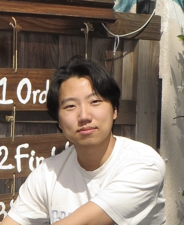

Kevin Ye
Student at UCR

Click to Learn about my past project
🕰 Education
- B.S. Computer Engineering - Univeristy of California, Riverside (2026)
- High School Diploma - Temple City High School (2018-2022)
💰 Work Experience
- Dining Student Assistant - UCR Dining Services (2022-2023)
- Bussed and reset tables to keep dining room and work areas clean.
- Scraped, washed and efficiently restacked dishware, utensils, and glassware to keep kitchen ready for customer demands.
- On-Call Warehouse Manager - Red Leaf Fashion (2018-2026)
- Managed employees and making sure day-to-day operation goes smoothly
- Prepared merchandise for delivery and sending merchandise to package delivery companies.
💻 Skills
- Programming Languages
- C++
- Python
- Javascript
- SQL
- Tools/Technologies
🚀 Subject Interests
Embredded Systems: After taking a few classes that had embredded systems projects, I grew to like it.
Web Development: I think its pretty interesting to create websites, so I like to get better at it.